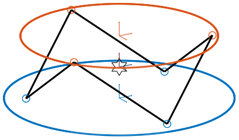
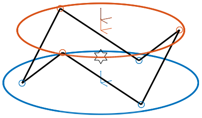
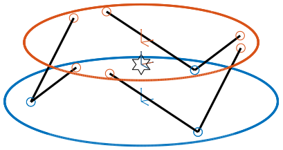
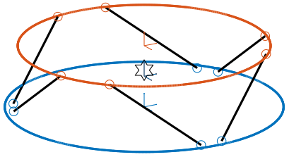
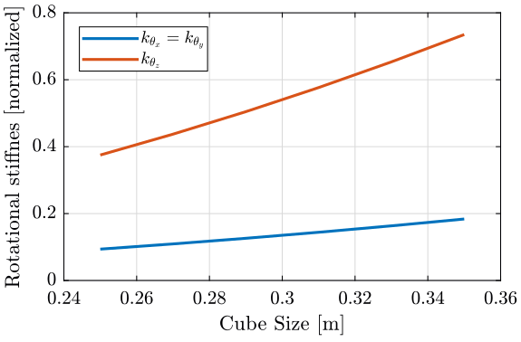
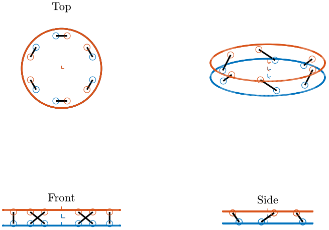
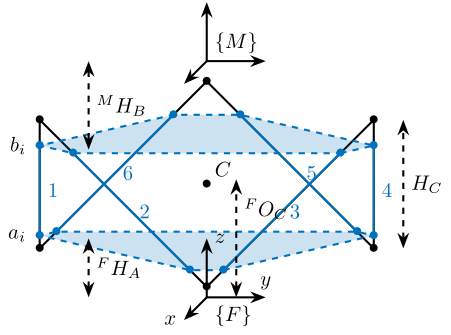

Cubic configuration for the Stewart Platform
Table of Contents
- 1. Stiffness Matrix for the Cubic configuration
- 1.1. Cubic Stewart platform centered with the cube center - Jacobian estimated at the cube center
- 1.2. Cubic Stewart platform centered with the cube center - Jacobian not estimated at the cube center
- 1.3. Cubic Stewart platform not centered with the cube center - Jacobian estimated at the cube center
- 1.4. Cubic Stewart platform not centered with the cube center - Jacobian estimated at the Stewart platform center
- 1.5. Conclusion
- 2. Configuration with the Cube’s center above the mobile platform
- 3. Cubic size analysis
- 4. Dynamic Coupling in the Cartesian Frame
- 5. Dynamic Coupling between actuators and sensors of each strut
- 6. Functions
The Cubic configuration for the Stewart platform was first proposed in geng94_six_degree_of_freed_activ. This configuration is quite specific in the sense that the active struts are arranged in a mutually orthogonal configuration connecting the corners of a cube. This configuration is now widely used (preumont07_six_axis_singl_stage_activ,jafari03_orthog_gough_stewar_platf_microm).
According to preumont07_six_axis_singl_stage_activ, the cubic configuration offers the following advantages:
This topology provides a uniform control capability and a uniform stiffness in all directions, and it minimizes the cross-coupling amongst actuators and sensors of different legs (being orthogonal to each other).
In this document, the cubic architecture is analyzed:
- In section 1, we study the uniform stiffness of such configuration and we find the conditions to obtain a diagonal stiffness matrix
- In section 2, we find cubic configurations where the cube’s center is located above the mobile platform
- In section 3, we study the effect of the cube’s size on the Stewart platform properties
- In section 4, we study the dynamics of the cubic configuration in the cartesian frame
- In section 5, we study the dynamic cross-coupling of the cubic configuration from actuators to sensors of each strut
- In section 6, function related to the cubic configuration are defined. To generate and study the Stewart platform with a Cubic configuration, the Matlab function
generateCubicConfigurationis used (described here).
1 Stiffness Matrix for the Cubic configuration
The Matlab script corresponding to this section is accessible here.
To run the script, open the Simulink Project, and type run cubic_conf_stiffness.m.
First, we have to understand what is the physical meaning of the Stiffness matrix \(\bm{K}\).
The Stiffness matrix links forces \(\bm{f}\) and torques \(\bm{n}\) applied on the mobile platform at \(\{B\}\) to the displacement \(\Delta\bm{\mathcal{X}}\) of the mobile platform represented by \(\{B\}\) with respect to \(\{A\}\): \[ \bm{\mathcal{F}} = \bm{K} \Delta\bm{\mathcal{X}} \]
with:
- \(\bm{\mathcal{F}} = [\bm{f}\ \bm{n}]^{T}\)
- \(\Delta\bm{\mathcal{X}} = [\delta x, \delta y, \delta z, \delta \theta_{x}, \delta \theta_{y}, \delta \theta_{z}]^{T}\)
If the stiffness matrix is inversible, its inverse is the compliance matrix: \(\bm{C} = \bm{K}^{-1\) and: \[ \Delta \bm{\mathcal{X}} = C \bm{\mathcal{F}} \]
Thus, if the stiffness matrix is diagonal, the compliance matrix is also diagonal and a force (resp. torque) \(\bm{\mathcal{F}}_i\) applied on the mobile platform at \(\{B\}\) will induce a pure translation (resp. rotation) of the mobile platform represented by \(\{B\}\) with respect to \(\{A\}\).
One has to note that this is only valid in a static way.
We here study what makes the Stiffness matrix diagonal when using a cubic configuration.
1.1 Cubic Stewart platform centered with the cube center - Jacobian estimated at the cube center
We create a cubic Stewart platform (figure 1) in such a way that the center of the cube (black star) is located at the center of the Stewart platform (blue dot). The Jacobian matrix is estimated at the location of the center of the cube.
H = 100e-3; % height of the Stewart platform [m] MO_B = -H/2; % Position {B} with respect to {M} [m] Hc = H; % Size of the useful part of the cube [m] FOc = H + MO_B; % Center of the cube with respect to {F}
stewart = initializeStewartPlatform(); stewart = initializeFramesPositions(stewart, 'H', H, 'MO_B', MO_B); stewart = generateCubicConfiguration(stewart, 'Hc', Hc, 'FOc', FOc, 'FHa', 0, 'MHb', 0); stewart = computeJointsPose(stewart); stewart = initializeStrutDynamics(stewart, 'K', ones(6,1)); stewart = computeJacobian(stewart); stewart = initializeCylindricalPlatforms(stewart, 'Fpr', 175e-3, 'Mpr', 150e-3);

Figure 1: Cubic Stewart platform centered with the cube center - Jacobian estimated at the cube center (png, pdf)
| 2 | 0 | -2.5e-16 | 0 | 2.1e-17 | 0 |
| 0 | 2 | 0 | -7.8e-19 | 0 | 0 |
| -2.5e-16 | 0 | 2 | -2.4e-18 | -1.4e-17 | 0 |
| 0 | -7.8e-19 | -2.4e-18 | 0.015 | -4.3e-19 | 1.7e-18 |
| 1.8e-17 | 0 | -1.1e-17 | 0 | 0.015 | 0 |
| 6.6e-18 | -3.3e-18 | 0 | 1.7e-18 | 0 | 0.06 |
1.2 Cubic Stewart platform centered with the cube center - Jacobian not estimated at the cube center
We create a cubic Stewart platform with center of the cube located at the center of the Stewart platform (figure 2). The Jacobian matrix is not estimated at the location of the center of the cube.
H = 100e-3; % height of the Stewart platform [m] MO_B = 20e-3; % Position {B} with respect to {M} [m] Hc = H; % Size of the useful part of the cube [m] FOc = H/2; % Center of the cube with respect to {F}
stewart = initializeStewartPlatform(); stewart = initializeFramesPositions(stewart, 'H', H, 'MO_B', MO_B); stewart = generateCubicConfiguration(stewart, 'Hc', Hc, 'FOc', FOc, 'FHa', 0, 'MHb', 0); stewart = computeJointsPose(stewart); stewart = initializeStrutDynamics(stewart, 'K', ones(6,1)); stewart = computeJacobian(stewart); stewart = initializeCylindricalPlatforms(stewart, 'Fpr', 175e-3, 'Mpr', 150e-3);

Figure 2: Cubic Stewart platform centered with the cube center - Jacobian not estimated at the cube center (png, pdf)
| 2 | 0 | -2.5e-16 | 0 | -0.14 | 0 |
| 0 | 2 | 0 | 0.14 | 0 | 0 |
| -2.5e-16 | 0 | 2 | -5.3e-19 | 0 | 0 |
| 0 | 0.14 | -5.3e-19 | 0.025 | 0 | 8.7e-19 |
| -0.14 | 0 | 2.6e-18 | 1.6e-19 | 0.025 | 0 |
| 6.6e-18 | -3.3e-18 | 0 | 8.9e-19 | 0 | 0.06 |
1.3 Cubic Stewart platform not centered with the cube center - Jacobian estimated at the cube center
Here, the “center” of the Stewart platform is not at the cube center (figure 3). The Jacobian is estimated at the cube center.
H = 80e-3; % height of the Stewart platform [m] MO_B = -30e-3; % Position {B} with respect to {M} [m] Hc = 100e-3; % Size of the useful part of the cube [m] FOc = H + MO_B; % Center of the cube with respect to {F}
stewart = initializeStewartPlatform(); stewart = initializeFramesPositions(stewart, 'H', H, 'MO_B', MO_B); stewart = generateCubicConfiguration(stewart, 'Hc', Hc, 'FOc', FOc, 'FHa', 0, 'MHb', 0); stewart = computeJointsPose(stewart); stewart = initializeStrutDynamics(stewart, 'K', ones(6,1)); stewart = computeJacobian(stewart); stewart = initializeCylindricalPlatforms(stewart, 'Fpr', 175e-3, 'Mpr', 150e-3);

Figure 3: Cubic Stewart platform not centered with the cube center - Jacobian estimated at the cube center (png, pdf)
| 2 | 0 | -1.7e-16 | 0 | 4.9e-17 | 0 |
| 0 | 2 | 0 | -2.2e-17 | 0 | 2.8e-17 |
| -1.7e-16 | 0 | 2 | 1.1e-18 | -1.4e-17 | 1.4e-17 |
| 0 | -2.2e-17 | 1.1e-18 | 0.015 | 0 | 3.5e-18 |
| 4.4e-17 | 0 | -1.4e-17 | -5.7e-20 | 0.015 | -8.7e-19 |
| 6.6e-18 | 2.5e-17 | 0 | 3.5e-18 | -8.7e-19 | 0.06 |
We obtain \(k_x = k_y = k_z\) and \(k_{\theta_x} = k_{\theta_y}\), but the Stiffness matrix is not diagonal.
1.4 Cubic Stewart platform not centered with the cube center - Jacobian estimated at the Stewart platform center
Here, the “center” of the Stewart platform is not at the cube center. The Jacobian is estimated at the center of the Stewart platform.
The center of the cube is at \(z = 110\). The Stewart platform is from \(z = H_0 = 75\) to \(z = H_0 + H_{tot} = 175\). The center height of the Stewart platform is then at \(z = \frac{175-75}{2} = 50\). The center of the cube from the top platform is at \(z = 110 - 175 = -65\).
H = 100e-3; % height of the Stewart platform [m] MO_B = -H/2; % Position {B} with respect to {M} [m] Hc = 1.5*H; % Size of the useful part of the cube [m] FOc = H/2 + 10e-3; % Center of the cube with respect to {F}
stewart = initializeStewartPlatform(); stewart = initializeFramesPositions(stewart, 'H', H, 'MO_B', MO_B); stewart = generateCubicConfiguration(stewart, 'Hc', Hc, 'FOc', FOc, 'FHa', 0, 'MHb', 0); stewart = computeJointsPose(stewart); stewart = initializeStrutDynamics(stewart, 'K', ones(6,1)); stewart = computeJacobian(stewart); stewart = initializeCylindricalPlatforms(stewart, 'Fpr', 215e-3, 'Mpr', 195e-3);

Figure 4: Cubic Stewart platform not centered with the cube center - Jacobian estimated at the Stewart platform center (png, pdf)
| 2 | 0 | 1.5e-16 | 0 | 0.02 | 0 |
| 0 | 2 | 0 | -0.02 | 0 | 0 |
| 1.5e-16 | 0 | 2 | -3e-18 | -2.8e-17 | 0 |
| 0 | -0.02 | -3e-18 | 0.034 | -8.7e-19 | 5.2e-18 |
| 0.02 | 0 | -2.2e-17 | -4.4e-19 | 0.034 | 0 |
| 5.9e-18 | -7.5e-18 | 0 | 3.5e-18 | 0 | 0.14 |
1.5 Conclusion
Here are the conclusion about the Stiffness matrix for the Cubic configuration:
- The cubic configuration permits to have \(k_x = k_y = k_z\) and \(k_{\theta_x} = k_{\theta_y}\)
- The stiffness matrix \(K\) is diagonal for the cubic configuration if the Jacobian is estimated at the cube center.
2 Configuration with the Cube’s center above the mobile platform
The Matlab script corresponding to this section is accessible here.
To run the script, open the Simulink Project, and type run cubic_conf_above_platform.m.
We saw in section 1 that in order to have a diagonal stiffness matrix, we need the cube’s center to be located at frames \(\{A\}\) and \(\{B\}\). Or, we usually want to have \(\{A\}\) and \(\{B\}\) located above the top platform where forces are applied and where displacements are expressed.
We here see if the cubic configuration can provide a diagonal stiffness matrix when \(\{A\}\) and \(\{B\}\) are above the mobile platform.
2.1 Having Cube’s center above the top platform
Let’s say we want to have a diagonal stiffness matrix when \(\{A\}\) and \(\{B\}\) are located above the top platform. Thus, we want the cube’s center to be located above the top center.
Let’s fix the Height of the Stewart platform and the position of frames \(\{A\}\) and \(\{B\}\):
H = 100e-3; % height of the Stewart platform [m] MO_B = 20e-3; % Position {B} with respect to {M} [m]
We find the several Cubic configuration for the Stewart platform where the center of the cube is located at frame \(\{A\}\). The differences between the configuration are the cube’s size:
For each of the configuration, the Stiffness matrix is diagonal with \(k_x = k_y = k_y = 2k\) with \(k\) is the stiffness of each strut. However, the rotational stiffnesses are increasing with the cube’s size but the required size of the platform is also increasing, so there is a trade-off here.
Hc = 0.4*H; % Size of the useful part of the cube [m] FOc = H + MO_B; % Center of the cube with respect to {F}
| 2 | 0 | -2.8e-16 | 0 | 2.4e-17 | 0 |
| 0 | 2 | 0 | -2.3e-17 | 0 | 0 |
| -2.8e-16 | 0 | 2 | -2.1e-19 | 0 | 0 |
| 0 | -2.3e-17 | -2.1e-19 | 0.0024 | -5.4e-20 | 6.5e-19 |
| 2.4e-17 | 0 | 4.9e-19 | -2.3e-20 | 0.0024 | 0 |
| -1.2e-18 | 1.1e-18 | 0 | 6.2e-19 | 0 | 0.0096 |
Hc = 1.5*H; % Size of the useful part of the cube [m] FOc = H + MO_B; % Center of the cube with respect to {F}
| 2 | 0 | -1.9e-16 | 0 | 5.6e-17 | 0 |
| 0 | 2 | 0 | -7.6e-17 | 0 | 0 |
| -1.9e-16 | 0 | 2 | 2.5e-18 | 2.8e-17 | 0 |
| 0 | -7.6e-17 | 2.5e-18 | 0.034 | 8.7e-19 | 8.7e-18 |
| 5.7e-17 | 0 | 3.2e-17 | 2.9e-19 | 0.034 | 0 |
| -1e-18 | -1.3e-17 | 5.6e-17 | 8.4e-18 | 0 | 0.14 |
Hc = 2.5*H; % Size of the useful part of the cube [m] FOc = H + MO_B; % Center of the cube with respect to {F}
| 2 | 0 | -3e-16 | 0 | -8.3e-17 | 0 |
| 0 | 2 | 0 | -2.2e-17 | 0 | 5.6e-17 |
| -3e-16 | 0 | 2 | -9.3e-19 | -2.8e-17 | 0 |
| 0 | -2.2e-17 | -9.3e-19 | 0.094 | 0 | 2.1e-17 |
| -8e-17 | 0 | -3e-17 | -6.1e-19 | 0.094 | 0 |
| -6.2e-18 | 7.2e-17 | 5.6e-17 | 2.3e-17 | 0 | 0.37 |
2.2 Conclusion
We found that we can have a diagonal stiffness matrix using the cubic architecture when \(\{A\}\) and \(\{B\}\) are located above the top platform. Depending on the cube’s size, we obtain 3 different configurations.
3 Cubic size analysis
The Matlab script corresponding to this section is accessible here.
To run the script, open the Simulink Project, and type run cubic_conf_size_analysis.m.
We here study the effect of the size of the cube used for the Stewart Cubic configuration.
We fix the height of the Stewart platform, the center of the cube is at the center of the Stewart platform and the frames \(\{A\}\) and \(\{B\}\) are also taken at the center of the cube.
We only vary the size of the cube.
3.1 Analysis
We initialize the wanted cube’s size.
Hcs = 1e-3*[250:20:350]; % Heights for the Cube [m] Ks = zeros(6, 6, length(Hcs));
The height of the Stewart platform is fixed:
H = 100e-3; % height of the Stewart platform [m]
The frames \(\{A\}\) and \(\{B\}\) are positioned at the Stewart platform center as well as the cube’s center:
MO_B = -50e-3; % Position {B} with respect to {M} [m] FOc = H + MO_B; % Center of the cube with respect to {F}
We find that for all the cube’s size, \(k_x = k_y = k_z = k\) where \(k\) is the strut stiffness. We also find that \(k_{\theta_x} = k_{\theta_y}\) and \(k_{\theta_z}\) are varying with the cube’s size (figure 8).

Figure 8: \(k_{\theta_x} = k_{\theta_y}\) and \(k_{\theta_z}\) function of the size of the cube
3.2 Conclusion
We observe that \(k_{\theta_x} = k_{\theta_y}\) and \(k_{\theta_z}\) increase linearly with the cube size.
In order to maximize the rotational stiffness of the Stewart platform, the size of the cube should be the highest possible.
4 Dynamic Coupling in the Cartesian Frame
The Matlab script corresponding to this section is accessible here.
To run the script, open the Simulink Project, and type run cubic_conf_coupling_cartesian.m.
In this section, we study the dynamics of the platform in the cartesian frame.
We here suppose that there is one relative motion sensor in each strut (\(\delta\bm{\mathcal{L}}\) is measured) and we would like to control the position of the top platform pose \(\delta \bm{\mathcal{X}}\).
Thanks to the Jacobian matrix, we can use the “architecture” shown in Figure 9 to obtain the dynamics of the system from forces/torques applied by the actuators on the top platform to translations/rotations of the top platform.
Figure 9: From Strut coordinate to Cartesian coordinate using the Jacobian matrix
We here study the dynamics from \(\bm{\mathcal{F}}\) to \(\delta\bm{\mathcal{X}}\).
One has to note that when considering the static behavior: \[ \bm{G}(s = 0) = \begin{bmatrix} 1/k_1 & & 0 \\ & \ddots & 0 \\ 0 & & 1/k_6 \end{bmatrix}\]
And thus: \[ \frac{\delta\bm{\mathcal{X}}}{\bm{\mathcal{F}}}(s = 0) = \bm{J}^{-1} \bm{G}(s = 0) \bm{J}^{-T} = \bm{K}^{-1} = \bm{C} \]
We conclude that the static behavior of the platform depends on the stiffness matrix. For the cubic configuration, we have a diagonal stiffness matrix is the frames \(\{A\}\) and \(\{B\}\) are coincident with the cube’s center.
4.1 Cube’s center at the Center of Mass of the mobile platform
Let’s create a Cubic Stewart Platform where the Center of Mass of the mobile platform is located at the center of the cube.
We define the size of the Stewart platform and the position of frames \(\{A\}\) and \(\{B\}\).
H = 200e-3; % height of the Stewart platform [m] MO_B = -10e-3; % Position {B} with respect to {M} [m]
Now, we set the cube’s parameters such that the center of the cube is coincident with \(\{A\}\) and \(\{B\}\).
Hc = 2.5*H; % Size of the useful part of the cube [m] FOc = H + MO_B; % Center of the cube with respect to {F}
stewart = initializeStewartPlatform(); stewart = initializeFramesPositions(stewart, 'H', H, 'MO_B', MO_B); stewart = generateCubicConfiguration(stewart, 'Hc', Hc, 'FOc', FOc, 'FHa', 25e-3, 'MHb', 25e-3); stewart = computeJointsPose(stewart); stewart = initializeStrutDynamics(stewart, 'K', 1e6*ones(6,1), 'C', 1e1*ones(6,1)); stewart = initializeJointDynamics(stewart, 'type_F', 'universal', 'type_M', 'spherical'); stewart = computeJacobian(stewart); stewart = initializeStewartPose(stewart);
Now we set the geometry and mass of the mobile platform such that its center of mass is coincident with \(\{A\}\) and \(\{B\}\).
stewart = initializeCylindricalPlatforms(stewart, 'Fpr', 1.2*max(vecnorm(stewart.platform_F.Fa)), ... 'Mpm', 10, ... 'Mph', 20e-3, ... 'Mpr', 1.2*max(vecnorm(stewart.platform_M.Mb)));
And we set small mass for the struts.
stewart = initializeCylindricalStruts(stewart, 'Fsm', 1e-3, 'Msm', 1e-3); stewart = initializeInertialSensor(stewart);
No flexibility below the Stewart platform and no payload.
ground = initializeGround('type', 'none'); payload = initializePayload('type', 'none');
The obtain geometry is shown in figure 10.

Figure 10: Geometry used for the simulations - The cube’s center, the frames \(\{A\}\) and \(\{B\}\) and the Center of mass of the mobile platform are coincident (png, pdf)
We now identify the dynamics from forces applied in each strut \(\bm{\tau}\) to the displacement of each strut \(d \bm{\mathcal{L}}\).
open('stewart_platform_model.slx') %% Options for Linearized options = linearizeOptions; options.SampleTime = 0; %% Name of the Simulink File mdl = 'stewart_platform_model'; %% Input/Output definition clear io; io_i = 1; io(io_i) = linio([mdl, '/Controller'], 1, 'openinput'); io_i = io_i + 1; % Actuator Force Inputs [N] io(io_i) = linio([mdl, '/Stewart Platform'], 1, 'openoutput', [], 'dLm'); io_i = io_i + 1; % Relative Displacement Outputs [m] %% Run the linearization G = linearize(mdl, io, options); G.InputName = {'F1', 'F2', 'F3', 'F4', 'F5', 'F6'}; G.OutputName = {'Dm1', 'Dm2', 'Dm3', 'Dm4', 'Dm5', 'Dm6'};
Now, thanks to the Jacobian (Figure 9), we compute the transfer function from \(\bm{\mathcal{F}}\) to \(\bm{\mathcal{X}}\).
Gc = inv(stewart.kinematics.J)*G*inv(stewart.kinematics.J'); Gc.InputName = {'Fx', 'Fy', 'Fz', 'Mx', 'My', 'Mz'}; Gc.OutputName = {'Dx', 'Dy', 'Dz', 'Rx', 'Ry', 'Rz'};
The obtain dynamics \(\bm{G}_{c}(s) = \bm{J}^{-T} \bm{G}(s) \bm{J}^{-1}\) is shown in Figure 11.
The dynamics is well decoupled at all frequencies.
We have the same dynamics for:
- \(D_x/F_x\), \(D_y/F_y\) and \(D_z/F_z\)
- \(R_x/M_x\) and \(D_y/F_y\)
The Dynamics from \(F_i\) to \(D_i\) is just a 1-dof mass-spring-damper system.
This is because the Mass, Damping and Stiffness matrices are all diagonal.
4.2 Cube’s center not coincident with the Mass of the Mobile platform
Let’s create a Stewart platform with a cubic architecture where the cube’s center is at the center of the Stewart platform.
H = 200e-3; % height of the Stewart platform [m] MO_B = -100e-3; % Position {B} with respect to {M} [m]
Now, we set the cube’s parameters such that the center of the cube is coincident with \(\{A\}\) and \(\{B\}\).
Hc = 2.5*H; % Size of the useful part of the cube [m] FOc = H + MO_B; % Center of the cube with respect to {F}
stewart = initializeStewartPlatform(); stewart = initializeFramesPositions(stewart, 'H', H, 'MO_B', MO_B); stewart = generateCubicConfiguration(stewart, 'Hc', Hc, 'FOc', FOc, 'FHa', 25e-3, 'MHb', 25e-3); stewart = computeJointsPose(stewart); stewart = initializeStrutDynamics(stewart, 'K', 1e6*ones(6,1), 'C', 1e1*ones(6,1)); stewart = initializeJointDynamics(stewart, 'type_F', 'universal', 'type_M', 'spherical'); stewart = computeJacobian(stewart); stewart = initializeStewartPose(stewart);
However, the Center of Mass of the mobile platform is not located at the cube’s center.
stewart = initializeCylindricalPlatforms(stewart, 'Fpr', 1.2*max(vecnorm(stewart.platform_F.Fa)), ... 'Mpm', 10, ... 'Mph', 20e-3, ... 'Mpr', 1.2*max(vecnorm(stewart.platform_M.Mb)));
And we set small mass for the struts.
stewart = initializeCylindricalStruts(stewart, 'Fsm', 1e-3, 'Msm', 1e-3); stewart = initializeInertialSensor(stewart);
No flexibility below the Stewart platform and no payload.
ground = initializeGround('type', 'none'); payload = initializePayload('type', 'none');
The obtain geometry is shown in figure 12.

Figure 12: Geometry used for the simulations - The cube’s center is coincident with the frames \(\{A\}\) and \(\{B\}\) but not with the Center of mass of the mobile platform (png, pdf)
We now identify the dynamics from forces applied in each strut \(\bm{\tau}\) to the displacement of each strut \(d \bm{\mathcal{L}}\).
open('stewart_platform_model.slx') %% Options for Linearized options = linearizeOptions; options.SampleTime = 0; %% Name of the Simulink File mdl = 'stewart_platform_model'; %% Input/Output definition clear io; io_i = 1; io(io_i) = linio([mdl, '/Controller'], 1, 'openinput'); io_i = io_i + 1; % Actuator Force Inputs [N] io(io_i) = linio([mdl, '/Stewart Platform'], 1, 'openoutput', [], 'dLm'); io_i = io_i + 1; % Relative Displacement Outputs [m] %% Run the linearization G = linearize(mdl, io, options); G.InputName = {'F1', 'F2', 'F3', 'F4', 'F5', 'F6'}; G.OutputName = {'Dm1', 'Dm2', 'Dm3', 'Dm4', 'Dm5', 'Dm6'};
And we use the Jacobian to compute the transfer function from \(\bm{\mathcal{F}}\) to \(\bm{\mathcal{X}}\).
Gc = inv(stewart.kinematics.J)*G*inv(stewart.kinematics.J'); Gc.InputName = {'Fx', 'Fy', 'Fz', 'Mx', 'My', 'Mz'}; Gc.OutputName = {'Dx', 'Dy', 'Dz', 'Rx', 'Ry', 'Rz'};
The obtain dynamics \(\bm{G}_{c}(s) = \bm{J}^{-T} \bm{G}(s) \bm{J}^{-1}\) is shown in Figure 13.

The system is decoupled at low frequency (the Stiffness matrix being diagonal), but it is not decoupled at all frequencies.
This was expected as the mass matrix is not diagonal (the Center of Mass of the mobile platform not being coincident with the frame \(\{B\}\)).
4.3 Conclusion
Some conclusions can be drawn from the above analysis:
- Static Decoupling <=> Diagonal Stiffness matrix <=> {A} and {B} at the cube’s center
- Dynamic Decoupling <=> Static Decoupling + CoM of mobile platform coincident with {A} and {B}.
5 Dynamic Coupling between actuators and sensors of each strut
The Matlab script corresponding to this section is accessible here.
To run the script, open the Simulink Project, and type run cubic_conf_coupling_struts.m.
From preumont07_six_axis_singl_stage_activ, the cubic configuration “minimizes the cross-coupling amongst actuators and sensors of different legs (being orthogonal to each other)”.
In this section, we wish to study such properties of the cubic architecture.
We will compare the transfer function from sensors to actuators in each strut for a cubic architecture and for a non-cubic architecture (where the struts are not orthogonal with each other).
5.1 Coupling between the actuators and sensors - Cubic Architecture
Let’s generate a Cubic architecture where the cube’s center and the frames \(\{A\}\) and \(\{B\}\) are coincident.
H = 200e-3; % height of the Stewart platform [m] MO_B = -10e-3; % Position {B} with respect to {M} [m] Hc = 2.5*H; % Size of the useful part of the cube [m] FOc = H + MO_B; % Center of the cube with respect to {F}
stewart = initializeStewartPlatform(); stewart = initializeFramesPositions(stewart, 'H', H, 'MO_B', MO_B); stewart = generateCubicConfiguration(stewart, 'Hc', Hc, 'FOc', FOc, 'FHa', 25e-3, 'MHb', 25e-3); stewart = computeJointsPose(stewart); stewart = initializeStrutDynamics(stewart, 'K', 1e6*ones(6,1), 'C', 1e1*ones(6,1)); stewart = initializeJointDynamics(stewart, 'type_F', 'universal', 'type_M', 'spherical'); stewart = computeJacobian(stewart); stewart = initializeStewartPose(stewart); stewart = initializeCylindricalPlatforms(stewart, 'Fpr', 1.2*max(vecnorm(stewart.platform_F.Fa)), ... 'Mpm', 10, ... 'Mph', 20e-3, ... 'Mpr', 1.2*max(vecnorm(stewart.platform_M.Mb))); stewart = initializeCylindricalStruts(stewart, 'Fsm', 1e-3, 'Msm', 1e-3); stewart = initializeInertialSensor(stewart);
No flexibility below the Stewart platform and no payload.
ground = initializeGround('type', 'none'); payload = initializePayload('type', 'none');

And we identify the dynamics from the actuator forces \(\tau_{i}\) to the relative motion sensors \(\delta \mathcal{L}_{i}\) (Figure 15) and to the force sensors \(\tau_{m,i}\) (Figure 16).
5.2 Coupling between the actuators and sensors - Non-Cubic Architecture
Now we generate a Stewart platform which is not cubic but with approximately the same size as the previous cubic architecture.
H = 200e-3; % height of the Stewart platform [m] MO_B = -10e-3; % Position {B} with respect to {M} [m]
stewart = initializeStewartPlatform(); stewart = initializeFramesPositions(stewart, 'H', H, 'MO_B', MO_B); stewart = generateGeneralConfiguration(stewart, 'FR', 250e-3, 'MR', 150e-3); stewart = computeJointsPose(stewart); stewart = initializeStrutDynamics(stewart, 'K', 1e6*ones(6,1), 'C', 1e1*ones(6,1)); stewart = initializeJointDynamics(stewart, 'type_F', 'universal', 'type_M', 'spherical'); stewart = computeJacobian(stewart); stewart = initializeStewartPose(stewart); stewart = initializeCylindricalPlatforms(stewart, 'Fpr', 1.2*max(vecnorm(stewart.platform_F.Fa)), ... 'Mpm', 10, ... 'Mph', 20e-3, ... 'Mpr', 1.2*max(vecnorm(stewart.platform_M.Mb))); stewart = initializeCylindricalStruts(stewart, 'Fsm', 1e-3, 'Msm', 1e-3); stewart = initializeInertialSensor(stewart);
No flexibility below the Stewart platform and no payload.
ground = initializeGround('type', 'none'); payload = initializePayload('type', 'none');
And we identify the dynamics from the actuator forces \(\tau_{i}\) to the relative motion sensors \(\delta \mathcal{L}_{i}\) (Figure 18) and to the force sensors \(\tau_{m,i}\) (Figure 19).

{kind=link}
{kind=link}
{kind=link}
{kind=link}
{kind=link}
{kind=link}
{kind=link}
{kind=link}
{kind=link}
{kind=link}
{kind=link}
{kind=link}
{kind=link}
{kind=link}
{kind=link}
{kind=link}
{kind=link}
5.3 Conclusion
The Cubic architecture seems to not have any significant effect on the coupling between actuator and sensors of each strut and thus provides no advantages for decentralized control.
6 Functions
6.1 generateCubicConfiguration: Generate a Cubic Configuration
This Matlab function is accessible here.
Function description
function [stewart] = generateCubicConfiguration(stewart, args) % generateCubicConfiguration - Generate a Cubic Configuration % % Syntax: [stewart] = generateCubicConfiguration(stewart, args) % % Inputs: % - stewart - A structure with the following fields % - geometry.H [1x1] - Total height of the platform [m] % - args - Can have the following fields: % - Hc [1x1] - Height of the "useful" part of the cube [m] % - FOc [1x1] - Height of the center of the cube with respect to {F} [m] % - FHa [1x1] - Height of the plane joining the points ai with respect to the frame {F} [m] % - MHb [1x1] - Height of the plane joining the points bi with respect to the frame {M} [m] % % Outputs: % - stewart - updated Stewart structure with the added fields: % - platform_F.Fa [3x6] - Its i'th column is the position vector of joint ai with respect to {F} % - platform_M.Mb [3x6] - Its i'th column is the position vector of joint bi with respect to {M}
Documentation

Figure 20: Cubic Configuration
Optional Parameters
arguments
stewart
args.Hc (1,1) double {mustBeNumeric, mustBePositive} = 60e-3
args.FOc (1,1) double {mustBeNumeric} = 50e-3
args.FHa (1,1) double {mustBeNumeric, mustBeNonnegative} = 15e-3
args.MHb (1,1) double {mustBeNumeric, mustBeNonnegative} = 15e-3
end
Check the stewart structure elements
assert(isfield(stewart.geometry, 'H'), 'stewart.geometry should have attribute H') H = stewart.geometry.H;
Position of the Cube
We define the useful points of the cube with respect to the Cube’s center. \({}^{C}C\) are the 6 vertices of the cubes expressed in a frame {C} which is located at the center of the cube and aligned with {F} and {M}.
sx = [ 2; -1; -1]; sy = [ 0; 1; -1]; sz = [ 1; 1; 1]; R = [sx, sy, sz]./vecnorm([sx, sy, sz]); L = args.Hc*sqrt(3); Cc = R'*[[0;0;L],[L;0;L],[L;0;0],[L;L;0],[0;L;0],[0;L;L]] - [0;0;1.5*args.Hc]; CCf = [Cc(:,1), Cc(:,3), Cc(:,3), Cc(:,5), Cc(:,5), Cc(:,1)]; % CCf(:,i) corresponds to the bottom cube's vertice corresponding to the i'th leg CCm = [Cc(:,2), Cc(:,2), Cc(:,4), Cc(:,4), Cc(:,6), Cc(:,6)]; % CCm(:,i) corresponds to the top cube's vertice corresponding to the i'th leg
Compute the pose
We can compute the vector of each leg \({}^{C}\hat{\bm{s}}_{i}\) (unit vector from \({}^{C}C_{f}\) to \({}^{C}C_{m}\)).
CSi = (CCm - CCf)./vecnorm(CCm - CCf);
We now which to compute the position of the joints \(a_{i}\) and \(b_{i}\).
Fa = CCf + [0; 0; args.FOc] + ((args.FHa-(args.FOc-args.Hc/2))./CSi(3,:)).*CSi; Mb = CCf + [0; 0; args.FOc-H] + ((H-args.MHb-(args.FOc-args.Hc/2))./CSi(3,:)).*CSi;
Populate the stewart structure
stewart.platform_F.Fa = Fa; stewart.platform_M.Mb = Mb;
Bibliography
- [geng94_six_degree_of_freed_activ] Geng & Haynes, Six Degree-Of-Freedom Active Vibration Control Using the Stewart Platforms, IEEE Transactions on Control Systems Technology, 2(1), 45-53 (1994). link. doi.
- [preumont07_six_axis_singl_stage_activ] Preumont, Horodinca, Romanescu, de Marneffe, Avraam, Deraemaeker, Bossens & Abu Hanieh, A Six-Axis Single-Stage Active Vibration Isolator Based on Stewart Platform, Journal of Sound and Vibration, 300(3-5), 644-661 (2007). link. doi.
- [jafari03_orthog_gough_stewar_platf_microm] Jafari & McInroy, Orthogonal Gough-Stewart Platforms for Micromanipulation, IEEE Transactions on Robotics and Automation, 19(4), 595-603 (2003). link. doi.